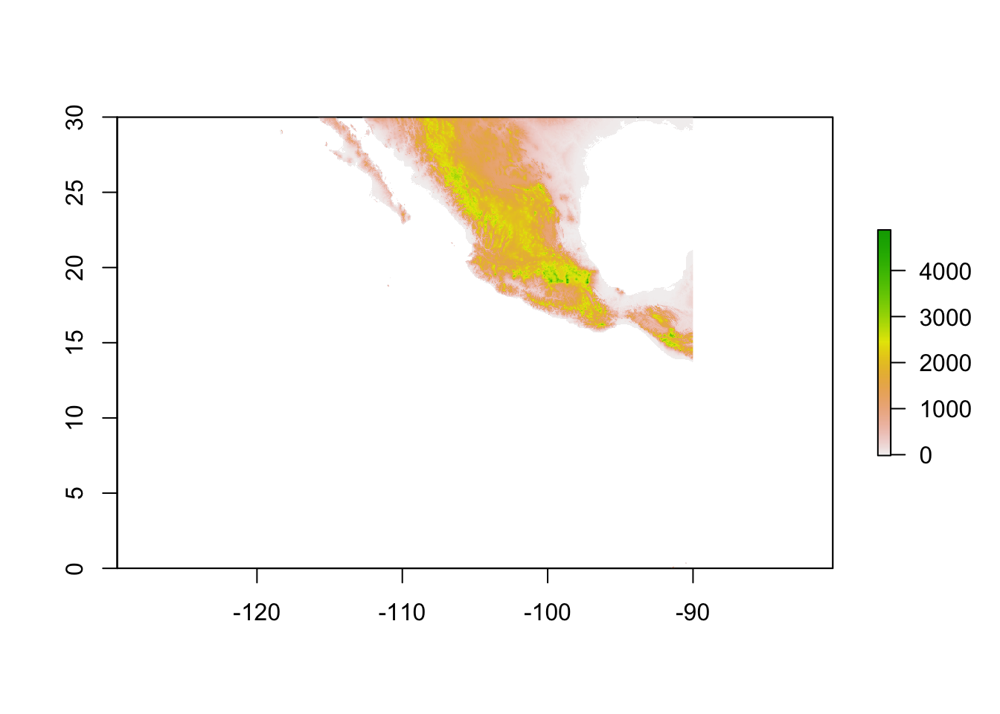
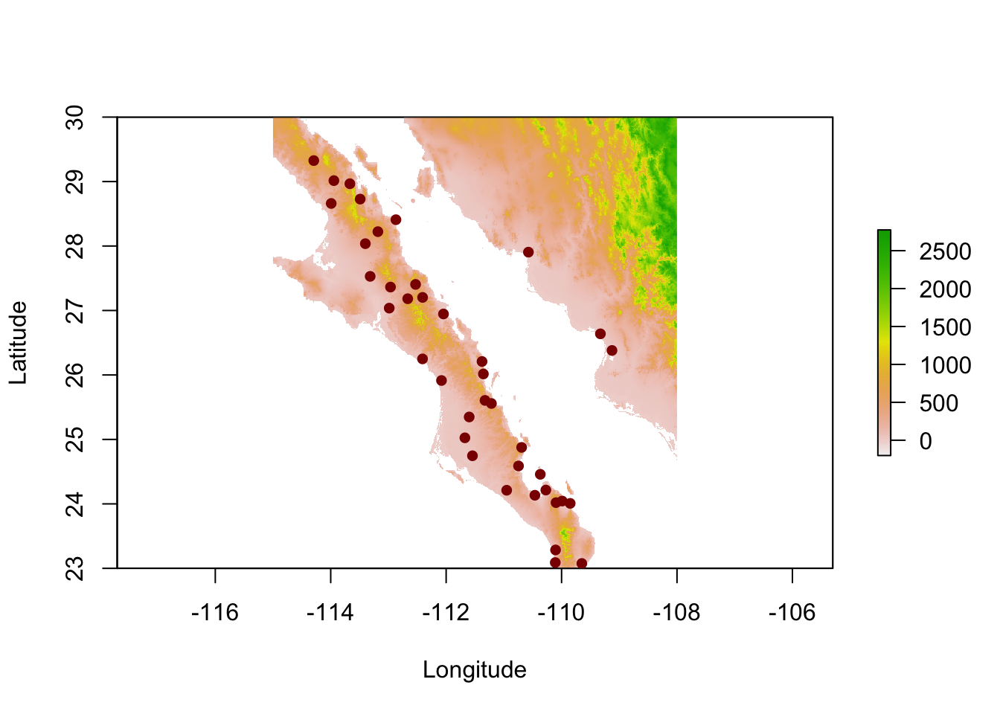
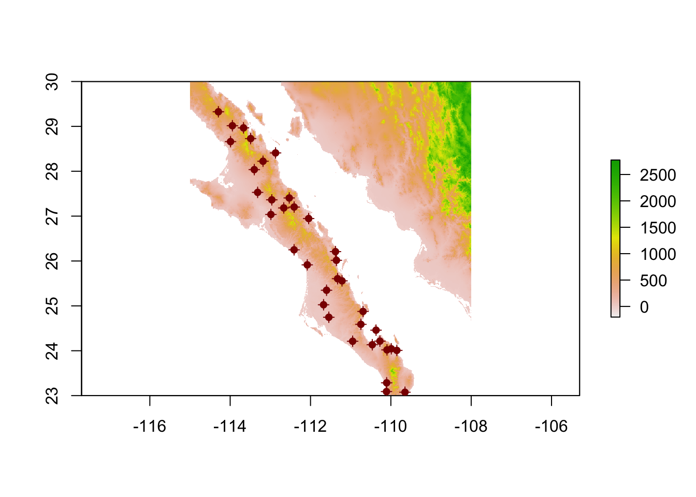
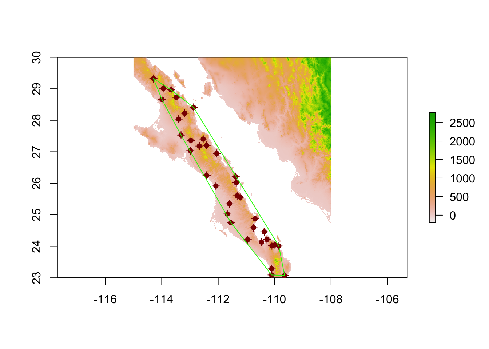
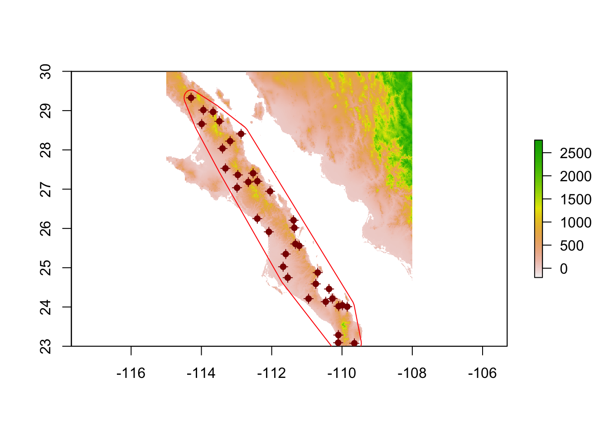
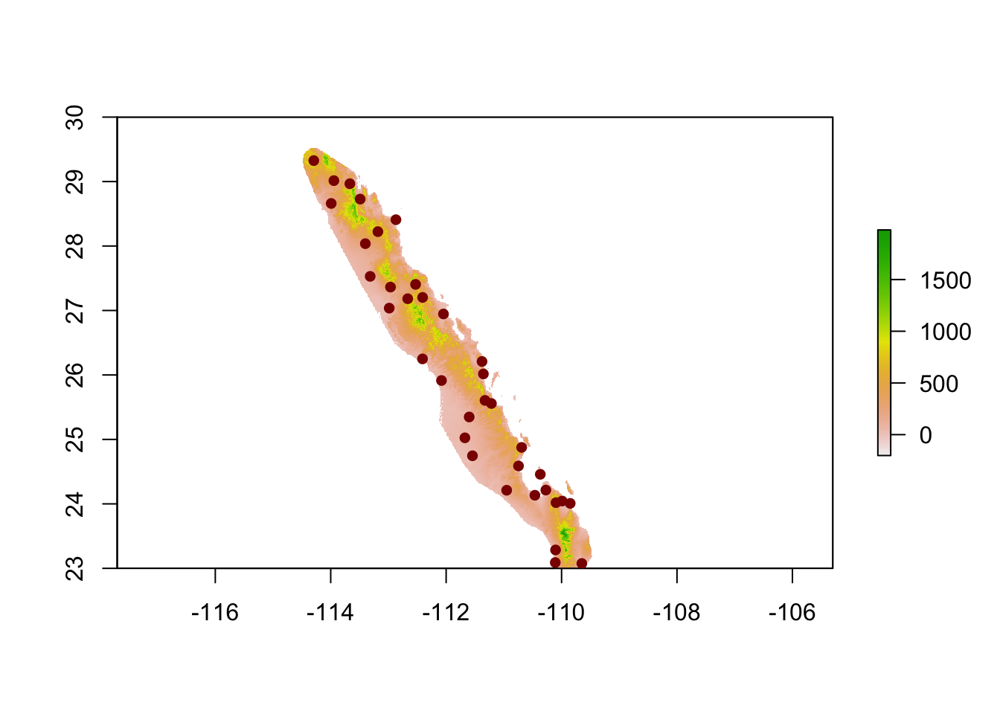

Buffers & Convex Hulls
An analysis common to modern population genetics is that of finding ecological distances between objects on a landscape. The estimation of pairwise distance derived from spatial data is a computationally intensive thing, one that if you are not careful will bring your laptop to its knees! One way to mitigate this data problem is to use a minimal amount raster area so that the estimation of the underlying distance graph can be done on a smaller set of points. This example provides a simple solution using convex hulls. ## A Bounding Box Approach The first option is to create a bounding box around your points. For this, I’ll use the enigmatic arapat data set included in the gstudio package.
library(raster)
library(gstudio)
data(arapat)
lon.min <- min(arapat$Longitude)
lon.max <- max(arapat$Longitude)
lat.min <- min(arapat$Latitude)
lat.max <- max(arapat$Latitude)
e <- extent( lon.min, lon.max, lat.min, lat.max )
e## class : Extent
## xmin : -114.2935
## xmax : -109.1263
## ymin : 23.0757
## ymax : 29.32541This is the minimal box around the points, but we probably want to have some kind of buffer as we don’t want our populations on the very edge of the raster.
e <- extent( -115, -108, 23, 30 )
e## class : Extent
## xmin : -115
## xmax : -108
## ymin : 23
## ymax : 30Now we can crop the raster to this size. I’ll use the altitude tile 22 from worldclim for this. Here is the original raster.
alt <- raster("../../data/alt_22.tif")
alt## class : RasterLayer
## dimensions : 3600, 3600, 12960000 (nrow, ncol, ncell)
## resolution : 0.008333333, 0.008333333 (x, y)
## extent : -120, -90, 0, 30 (xmin, xmax, ymin, ymax)
## coord. ref. : +proj=longlat +datum=WGS84 +no_defs +ellps=WGS84 +towgs84=0,0,0
## data source : /Users/rodney/Desktop/dyerlabweb/data/alt_22.tif
## names : alt_22
## values : -202, 5469 (min, max)which looks like.
plot(alt) We can crop it to the bounding box for the points as:
bc <- crop( alt, e )
bc## class : RasterLayer
## dimensions : 840, 840, 705600 (nrow, ncol, ncell)
## resolution : 0.008333333, 0.008333333 (x, y)
## extent : -115, -108, 23, 30 (xmin, xmax, ymin, ymax)
## coord. ref. : +proj=longlat +datum=WGS84 +no_defs +ellps=WGS84 +towgs84=0,0,0
## data source : in memory
## names : alt_22
## values : -202, 2774 (min, max)coords <- strata_coordinates(arapat)
pts <- SpatialPoints( coords[,2:3] )
plot(bc, xlab="Longitude", ylab="Latitude")
points( pts, col="darkred", pch=16) ## A Convex Hull Approach As you look at the image above, you see that there is a lot of area that is not in ‘the midst’ of the points. Moreover, there are those points on the mainland who are probably not going to be connected to the peninsular points due to the Sea of Cortez. I’m going to first limit the points to the ones on the peninsula and then we will estimate a convex hull. A convex hull is the small convex polygon that contains all the points. You can think of it like snapping a rubber band around the points. This will give us the minimal raster area on which can estimate raster-based distances (though we probably want to put a buffer around it so that we do not have points at the very edge). Here is how we do that. First, I’ll extract just the peninsular populations.
baja_coords <- coords[ !(coords$Stratum %in% c("101","102","32")), ]
baja_pts <- SpatialPoints( baja_coords[,2:3])
plot(bc)
plot(baja_pts,add=T,col="darkred")
plot(baja_pts,add=T,col="darkred",pch=16) Then we will load in the rgeos library and determine the hull
require(rgeos)
hull <- gConvexHull(baja_pts)
plot(bc)
plot(baja_pts,add=T,col="darkred")
plot(baja_pts,add=T,col="darkred",pch=16)
plot(hull,add=T,border="green") This is great! So now, we probably want to put a buffer around it so that the points are on the very edge. The units we will use depend upon the units of the raster. So in this case, it will be in degrees of lat/lon (which is a bit dodgy since they are not quite equal distance metrics but for our purposes it is just fine).
hull_plus_buffer <- gBuffer(hull,width=.2)
plot(bc)
plot(baja_pts,add=T,col="darkred")
plot(baja_pts,add=T,col="darkred",pch=16)
plot(hull_plus_buffer, add=T, border="red") Perfect! Now, we need to only keep those components of our raster that are within the hull_plus_buffer polygon, and for this we use a mask.
pop_hull <- mask(bc,hull_plus_buffer)
plot(pop_hull)
plot(baja_pts,add=T,col="darkred",pch=16) Exact! Now, when you run this raster and these points through gdistance, you will be using a more minimal set of raster data for the calculations and it will be more efficient—and reduce the thermal load you are imposing on your laptop!